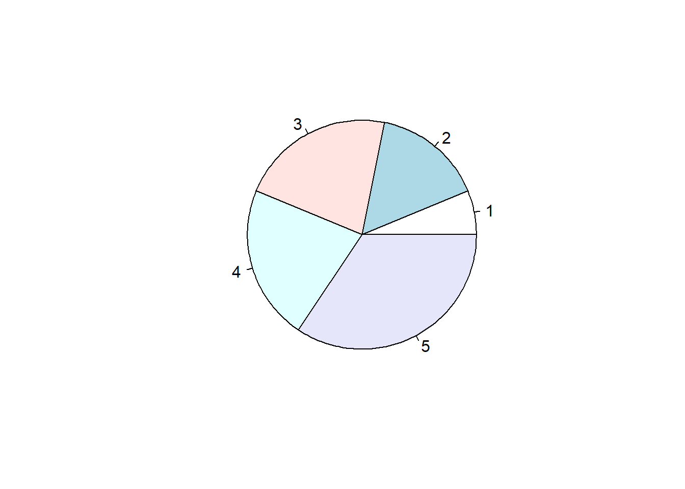
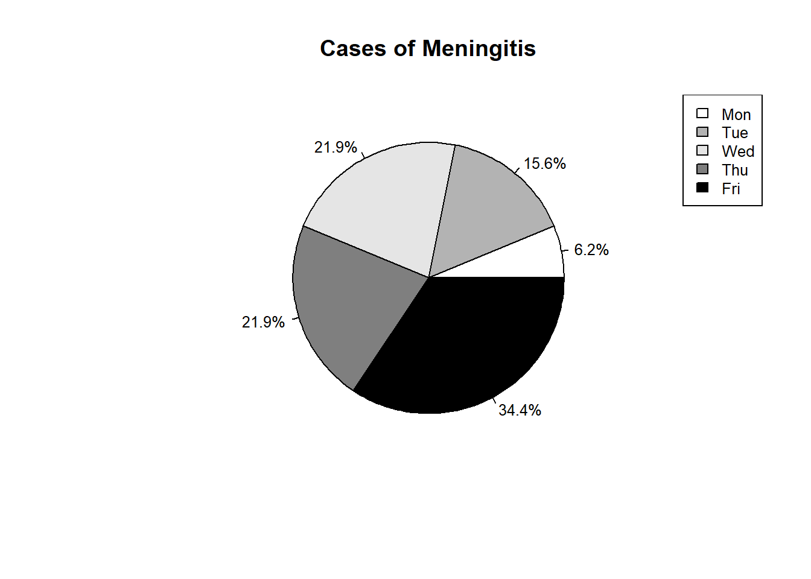
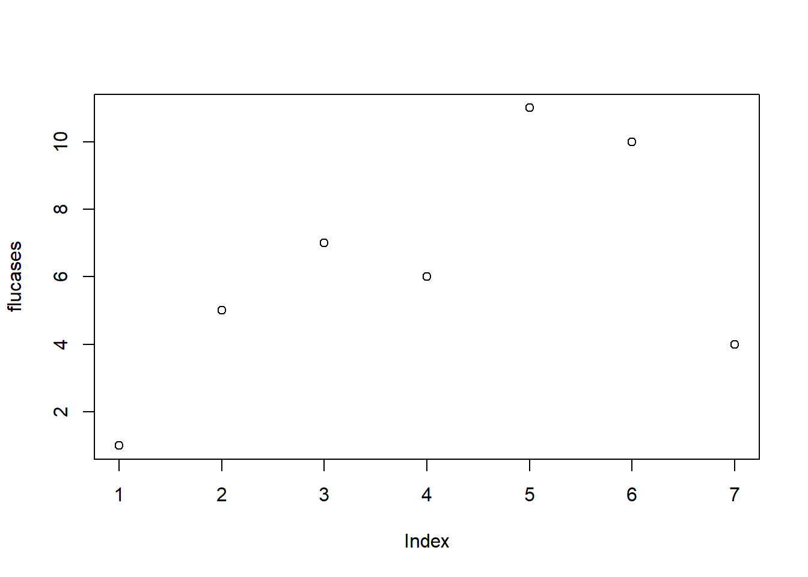
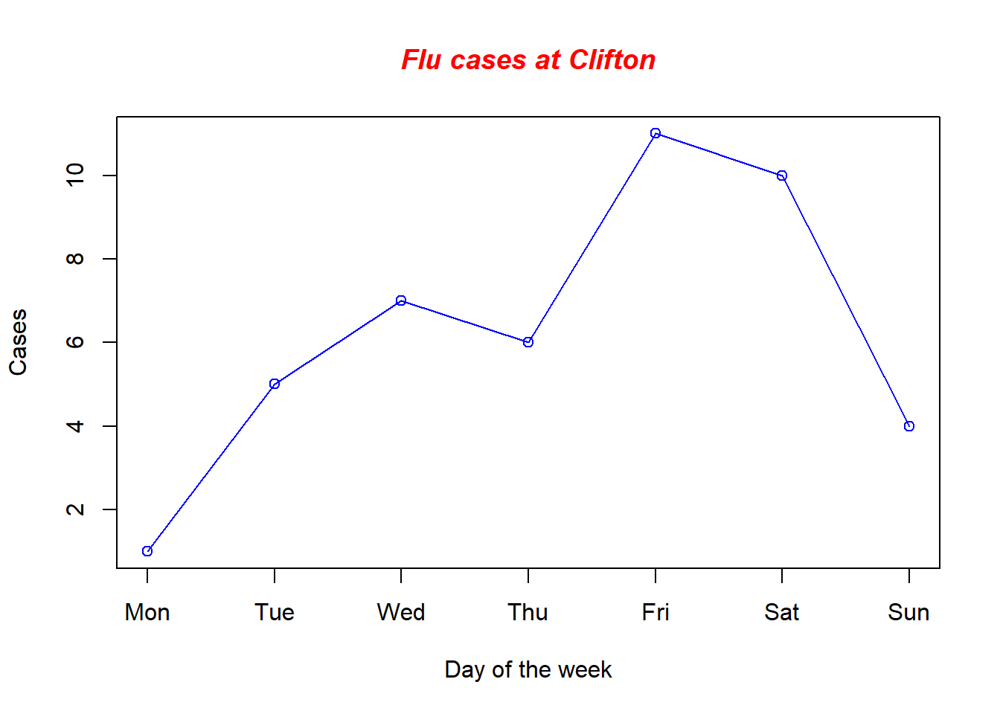
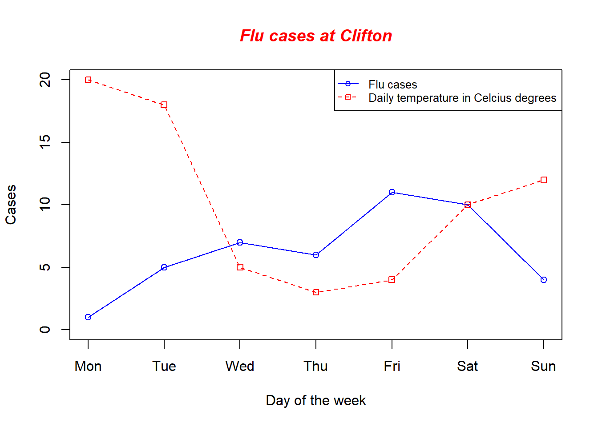
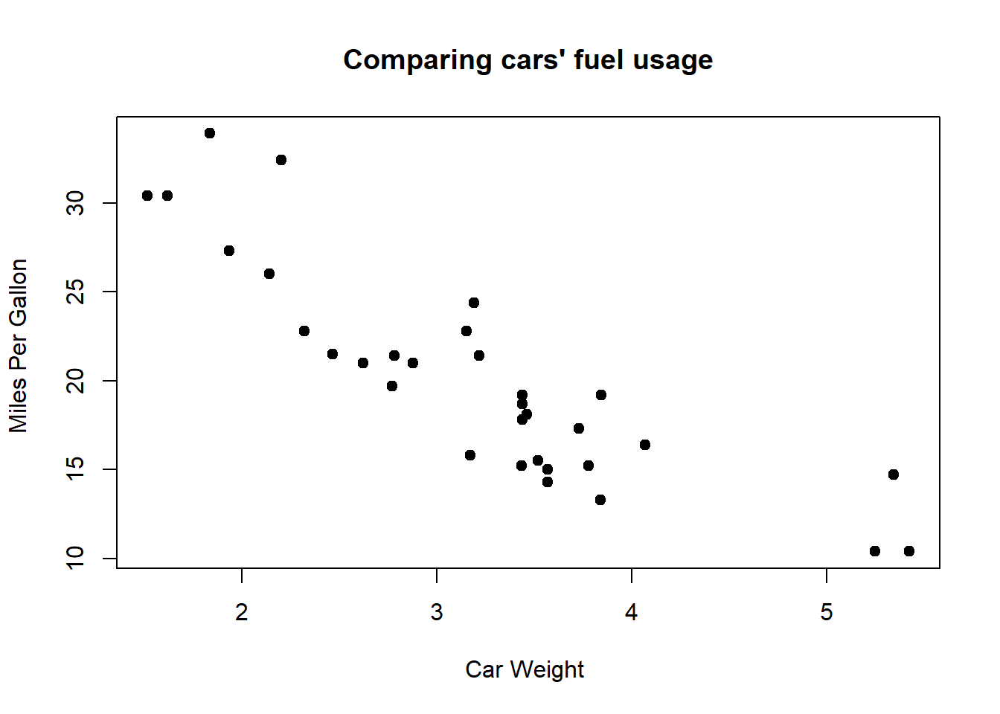
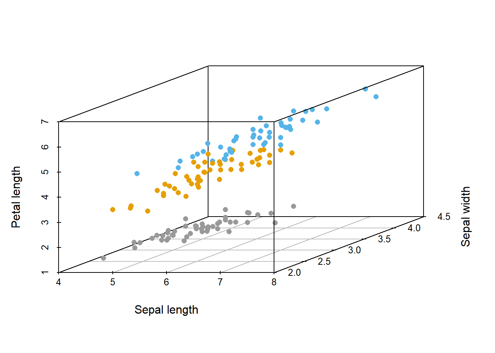
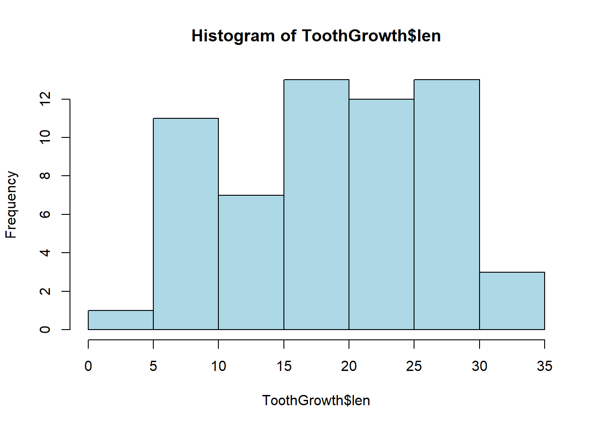
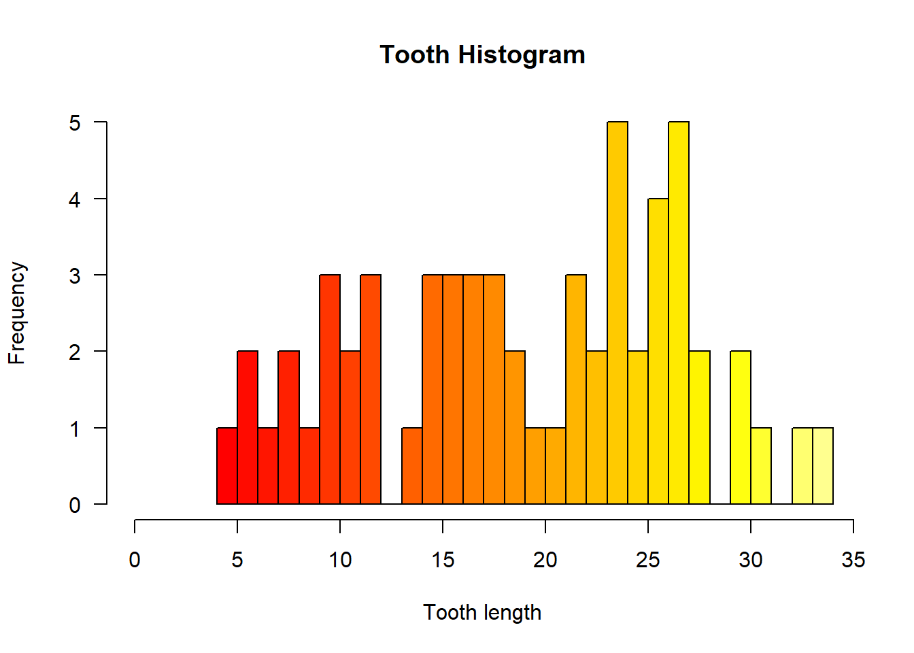
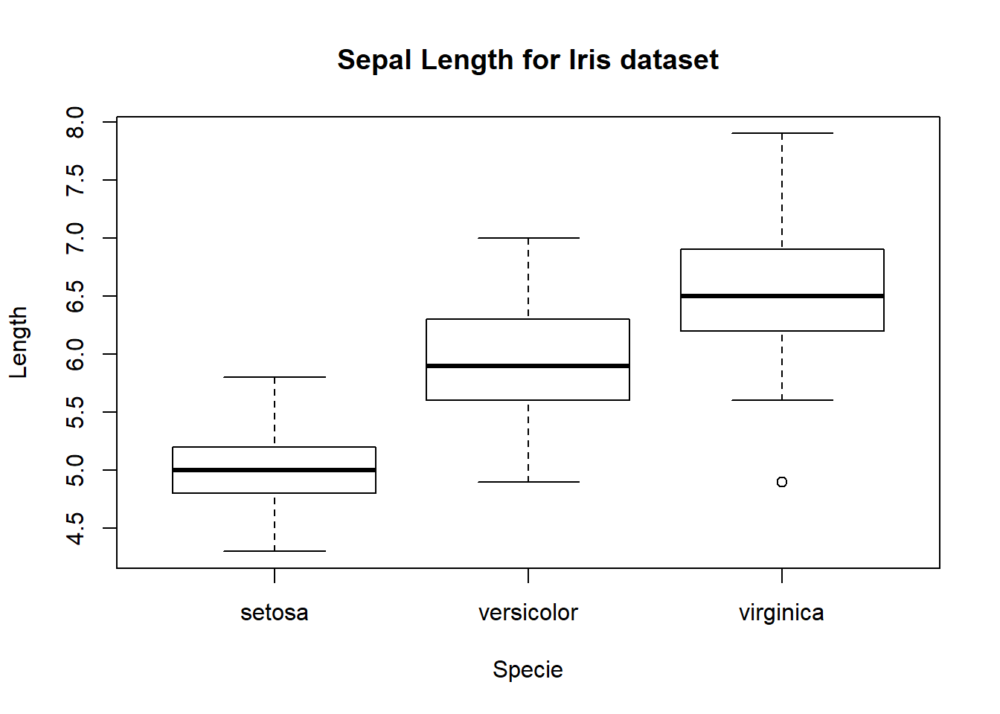

Chapter 5 Data Visualization in R
5.1 Basics
5.1.1 Pie-charts
Let’s start with a simple pie chart of the meningitis cases for a hospital:
# Define the meningitis vector with 5 values
meningitis <- c(2, 5, 7, 7, 11)
# Graph the meningitis vector with all defaults
pie(meningitis)
Now, We are going to improve this pie chart by adding labels, proportions and a legend:
# Define some colors ideal for black & white print
colors <- c("white","grey70","grey90","grey50","black")
# Calculate the percentage for each day, rounded to one # decimal place
meningits_labels <- round(meningitis/sum(meningitis) * 100, 1)
# Concatenate the character '%' after each value
meningits_labels <- paste(meningits_labels, "%", sep="")
# Create a pie chart with defined heading and custom colors # and labels
pie(
meningitis,
main = "Cases of Meningitis",
col = colors,
labels = meningits_labels,
cex = 0.8
)
# Create a legend at the right
legend("topright",
c("Mon", "Tue", "Wed", "Thu", "Fri"),
cex = 0.8,
fill = colors)
5.1.2 Lines and Scatterplots
Line charts are the simplest way to explore your data, suppose we have flu cases reported for an entire week:
flucases <- c(1, 5, 7, 6, 11,10,4)
plot(flucases)
We are going to customize our plot by adding a proper title and axes:
plot(
flucases,
xaxt = "n",
type = "o",
col = "blue",
xlab = "Day of the week",
ylab = "Cases"
)
axis(1,
at = 1:7,
labels = c("Mon", "Tue", "Wed", "Thu", "Fri", "Sat", "Sun"))
title(main = "Flu cases at Clifton",
col.main = "red",
font.main = 4)
Now suppose you have the data for daily temperature at Clifton, and want to make a visual comparison:
temperature <- c(20, 18, 5, 3, 4, 10, 12)
plot(
flucases,
xaxt = "n",
type = "o",
col = "blue",
xlab = "Day of the week",
ylab = "Cases",
ylim = c(0, max(temperature))
)
axis(1,
at = 1:7,
labels = c("Mon", "Tue", "Wed", "Thu", "Fri", "Sat", "Sun"))
title(main = "Flu cases at Clifton",
col.main = "red",
font.main = 4)
# Graph daily temperature with red dashed line and square points
lines(
temperature,
type = "o",
pch = 22,
lty = 2,
col = "red"
)
# Adding the legend
legend(
"topright",
c("Flu cases", "Daily temperature in Celcius degrees"),
cex = 0.8,
col = c("blue", "red"),
pch = 21:22,
lty = 1:2
)
5.1.3 Scatterplots
The simplest way to create scatterplots is to use plot(x, y), where x and y are numeric vectors denoting the (x,y) points to plot:
data(mtcars)
plot(
mtcars$wt,
mtcars$mpg,
main = "Comparing cars' fuel usage",
xlab = "Car Weight ",
ylab = "Miles Per Gallon ",
pch = 19
)
But also, more complex comparisons can be performed in R using scatterplot3d package:
colors <- c("#999999", "#E69F00", "#56B4E9")
library(scatterplot3d) # if you are getting a error here, please make sure you have installed this package :)
scatterplot3d(
x = iris$Sepal.Length,
y = iris$Sepal.Width,
z = iris$Petal.Length,
pch = 16,
color = colors[iris$Species], #assign a color based on each specie
grid = TRUE,
box = TRUE,
xlab = "Sepal length",
ylab = "Sepal width",
zlab = "Petal length"
)
5.2 Histograms
We use histograms as one of the first steps in any exploratory data analysis. R offers flexible tools to create histograms. For this example we are going to use ToothGrowth dataset which contains the result from an experiment studying the effect of vitamin C on tooth growth in 60 Guinea pigs.
# Create a histogram for Toothgrowth in light blue with the y axis
# ranging from 0-10
hist(ToothGrowth$len, col="lightblue")
We can customize colors, scales and many more items in our histogram!
# Compute the largest y value used in this data
max_num <- max(ToothGrowth$len)
# Create a histogram for this dataset with fire colors, set breaks
# so each number is in its own group, make x axis range from
# 0-max_num, disable right-closing of cell intervals, set
# heading, and make y-axis labels horizontal
hist(
ToothGrowth$len,
col = heat.colors(max_num),
breaks = max_num,
xlim = c(0, max_num),
right = F,
main = "Tooth Histogram",
xlab = "Tooth length",
las = 1
)
5.2.1 Boxplots
We can create boxplots, boxplots by groups and boxplots by combinations of groups using boxplot() function. This is very useful when you want to check the data distribution visually:
data(iris)
boxplot(
Sepal.Length ~ Species,
data = iris,
main = "Sepal Length for Iris dataset",
xlab = "Specie",
ylab = "Length"
)
5.3 Other tips
Summary of useful plotting functions:
plot(), hist() and other functions - popular generic high-level function;
curve() - Produces new or adds curves to existing plots;
segments() - Adds line segments with pairs of point;
abline() - Adds linear lines to existing plot based on intercept and slope;
lines() - Adds lines to existing plot based on coordinates;
points() - Adds points to existing plot based on coordinates;
arrows() - Draws arrows between pairs of points;
polygon() - Draws polygons;
rect() - Adds a rectangle with the given coordinates, fill and border colors;
text() - Adds text to the plots given coordinate in x and y;
Additional functions:
title() - Adds titles;
box() -Adds a box around the plots:
mtext() -Add text to the four margins;
axis() - Adds an axis to the current plot.
5.4 Project 1
- Using the dataset discoveries \(data(discoveries)\), answer the following questions:
Depict discoveries per year using the plot function with blue line.
Which decade has the largest number of discoveries?
Set the title, x and y axis properly
5.5 Project 2
Using the CO2 dataset \(data(CO2)\) and histograms, answer the following questions:
- Group each plant specie as follows:
- Qnx as plant 1
- Qcx as plant 2
- Mnx as plant 3
- Mcx as plant 4
Choose two of the grouped species and check their distributions using histograms
Interpret the results
Homework 1
- Using the mtcars dataset \(data(mtcars)\), answer the following questions:
Use the scatterplots to check cars’ hoursepower vs fuel usage
Use your past knowledge and estimate the linear regression
Depict the linear regression as a line
Add a proper legend, title and axes.
- Using the iris dataset and boxplots answer the following questions:
Compare each specie by petal width and petal length
Which is the median value for setosa in both boxplots
What specie has the largest specie petal width?
Can you recognize outliers in the dataset, which specie?